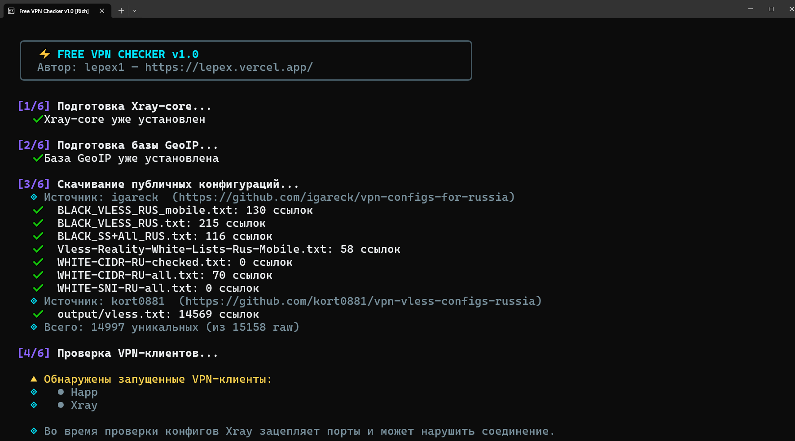

Проверка VPN-конфигов и сборка подписок VPN config checker and subscription builder
Скачивает около 16 000 публичных конфигов (VLESS, Trojan, VMess, Shadowsocks), проверяет каждый через Xray-core, определяет страну сервера по GeoLite2 и собирает из рабочих готовую подписку. Downloads around 16,000 public configs (VLESS, Trojan, VMess, Shadowsocks), tests each one through Xray-core, resolves the server country via GeoLite2 and builds a subscription from the ones that work.

Проверка реальным запросом A real request, not a port ping
Каждый конфиг запускается в отдельном Xray-инстансе, и через туннель уходит HTTP-запрос к gstatic.com с ответом 204. Each config runs in its own Xray instance, and an HTTP request to gstatic.com (204 response) goes through the tunnel.
Страны по GeoLite2 Country labels from GeoLite2
IP рабочего сервера ищется в базе MaxMind GeoLite2. В названии конфига появляется флаг страны, а список сортируется по популярности стран. The working server's IP is looked up in MaxMind GeoLite2. Configs get a country flag in the name, and the list is sorted by how often each country appears.
Подписка в GitHub Subscription hosted on GitHub
Результат можно запушить в свой репозиторий и подключить в клиенте по raw-ссылке. Список серверов обновляется сам. The result can be pushed to your own repository and added to a client as a raw URL, so the server list updates itself.
Совместимость с клиентами Works with common clients
На выходе TXT- и Base64-подписки для Happ, v2rayN, NekoBox, V2RayTun, Throne и других клиентов на Xray/Sing-box. The output is plain text and Base64 subscriptions for Happ, v2rayN, NekoBox, V2RayTun, Throne and other Xray/Sing-box clients.
Как запустить Running it
Скачайте free-vpn-checker.exe из GitHub Releases. Установка не нужна.
Download free-vpn-checker.exe from GitHub Releases. No install needed.
Запустите: программа сама скачает Xray-core и GeoIP, заберёт свежие ссылки и проверит их за 3–5 минут. Run it: it downloads Xray-core and GeoIP, fetches fresh links and tests them in 3–5 minutes.
Рабочие конфиги появятся в output/ (TXT и Base64) или уйдут в вашу GitHub-подписку.
Working configs land in output/ (TXT and Base64) or go to your GitHub subscription.